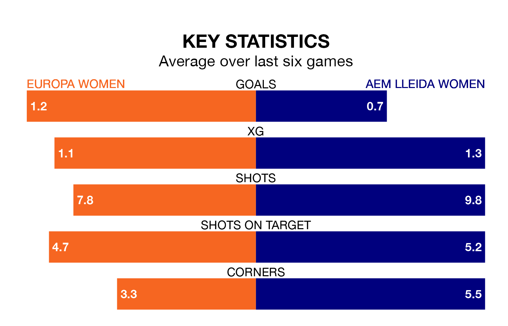

AEM Lleida Women face Europa Women on Sunday seeking to protect their long unbeaten run in Primera Federación Femenina.
AEM Lleida are unbeaten in five, with three wins and two draws, ahead of the 11am kick-off.
They face an Europa team who have won just two and lost three over the same number of games.
Europa are 12th in the table after 13 games, of which they have won four and drawn one, earning 13 points.
AEM Lleida are seven places ahead of the hosts in fifth, with six wins and four draws putting them on 22 points.
With 12 goals in 13 games so far this season, the away team are the league's third-lowest scorers with 0.9 goals per game. But they are conceding fewer than average too, letting in 10 goals at a rate of 0.8 per game.
Europa are also below average scorers, with 1.0 goal per game, compared to a league average of 1.2. They have conceded 2.3 goals per game.
Europa's last match was on Sunday, a 5-1 loss against Atlético Madrid II Women, with getting the goal for Europa.
AEM Lleida beat Alhama 2-0 last time out, also on January 7, with on the scoresheet.
Updated: 10:50, 10/01/24